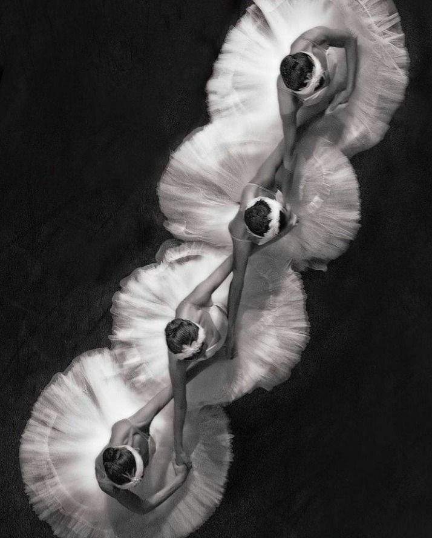
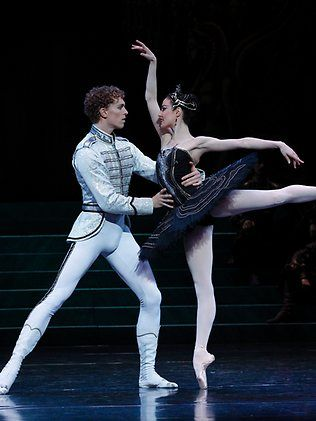
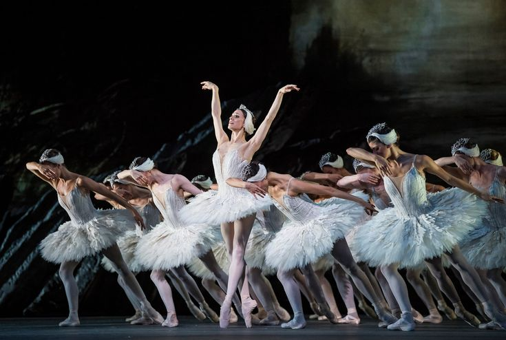
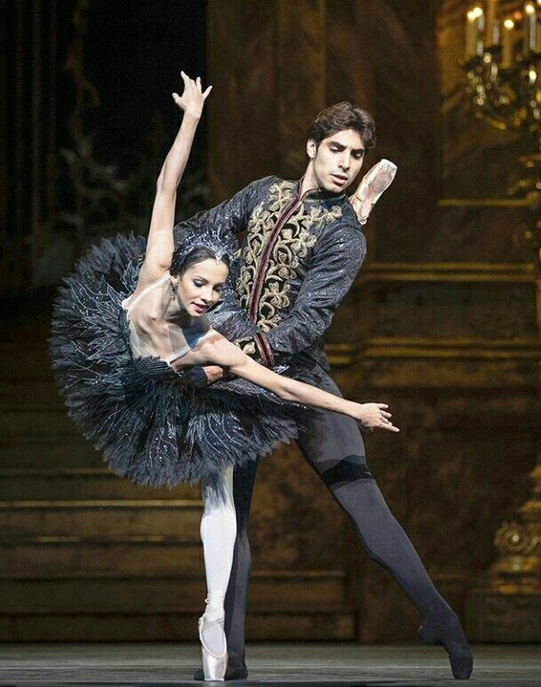

Why Swan Lake Remains the Most Iconic Ballet of All Time
For nearly 150 years, Swan Lake has remained one of the most celebrated and recognizable ballets in the world. Known for its emotional storytelling, breathtaking choreography, and unforgettable score composed by Pyotr Ilyich Tchaikovsky, the ballet continues to captivate audiences across generations. Its timeless themes of love, betrayal, and sacrifice have helped solidify its place as a masterpiece of classical ballet.
One of the most iconic aspects of Swan Lake is the dual role of Odette and Odile, often referred to as the White Swan and Black Swan. Dancers performing these roles must combine grace, technical precision, and dramatic expression, making it one of the most demanding performances in ballet. The famous “Black Swan” variation, filled with challenging turns and pointe work, has become a defining symbol of ballet excellence.

The story of Swan Lake is another reason why audiences continue to connect with the ballet today. The ballet follows Prince Siegfried and Princess Odette, who has been cursed by an evil sorcerer to live as a swan during the day and only return to human form at night. Themes of love, betrayal, innocence, and sacrifice give the ballet emotional depth that continues to resonate with audiences of all ages. The contrast between the gentle White Swan, Odette, and the seductive Black Swan, Odile, creates one of the most dramatic and iconic roles in all of ballet.
For dancers, performing Swan Lake is considered one of the greatest achievements in classical ballet. The role of Odette/Odile is especially demanding because it requires both technical precision and emotional artistry. The ballerina must portray two completely different characters while mastering difficult pointe work, balance, turns, and control. The famous Black Swan variation, often known for its challenging fouetté turns, has become a symbol of ballet excellence and discipline.

The visual beauty of Swan Lake also contributes to its lasting legacy. The ballet is known for its stunning costumes, elegant stage designs, and perfectly synchronized corps de ballet scenes. The image of ballerinas dressed in white swan tutus moving together in unison has become one of the most recognizable visuals in performing arts history. These scenes create a sense of elegance, harmony, and timeless beauty that audiences continue to admire.
Beyond the stage, Swan Lake has had a major influence on modern culture, fashion, and entertainment. Its aesthetic has inspired films, photography, fashion collections, and modern dance productions around the world. The ballet’s themes and imagery continue to appear in pop culture because of how visually and emotionally powerful they are. Even after nearly 150 years, Swan Lake continues to attract sold-out audiences and inspire new generations of dancers.

Today, Swan Lake remains the ultimate symbol of classical ballet. Its combination of breathtaking music, emotional storytelling, technical brilliance, and visual elegance has secured its place as one of the greatest ballets of all time. Whether experienced by lifelong ballet lovers or first-time viewers, Swan Lake continues to demonstrate why ballet is considered one of the most beautiful and timeless forms of art.